2. De in dit document gebruikte tools
In dit document gebruiken we de volgende tools:
- een JDK Java 1.5
- de webserver TOMCAT (http://tomcat.apache.org/),
- de ontwikkelomgeving ECLIPSE (http://www.eclipse.org/) met de plug-in WTP (Web Tools Package).
- een browser (IE, NETSCAPE, MOZILLA Firefox, OPERA, ...).
Dit zijn gratis tools. Over het algemeen kunnen er tal van open-source-tools worden gebruikt bij webontwikkeling:
http://www.borland.com/jbuilder/foundation/index.html | ||
http://struts.apache.org/ | ||
http://www.mysql.com/ | ||
http://tomcat.apache.org/ | ||
http://www.netscape.com/ | ||
2.1. J ava 1.5
De Tomcat-servletcontainer 5.x vereist een Java Virtual Machine 1.5. U moet dus eerst deze versie van Java installeren, die u bij Sun kunt vinden via de url [http://www.sun.com] -> [http://java.sun.com/j2se/1.5.0/download.jsp] (mei 2006):
stap 1:

étape 2 :

stap 3:
Start de installatie van JDK 1.5 vanuit het gedownloade bestand.
2.2. De Tomcat 5-servletcontainer
Om servlets uit te voeren, hebben we een servletcontainer nodig. Hier stellen we er een voor, Tomcat 5.x, beschikbaar via de url http://tomcat.apache.org/. We beschrijven de procedure (mei 2006) om deze te installeren. Als er al een eerdere versie van Tomcat is geïnstalleerd, is het raadzaam deze eerst te verwijderen.
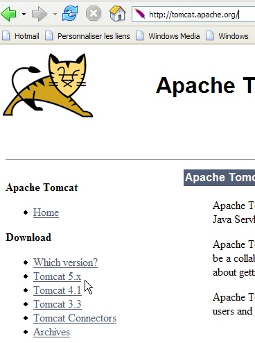
Om het product te downloaden, volgt u de bovenstaande link [Tomcat 5.x]:

Kies het .exe-bestand voor het Windows-platform. Zodra dit is gedownload, start u de installatie van Tomcat:
Voer [next] uit ->

Accepteer de licentievoorwaarden ->

Voer [next] in ->

De voorgestelde installatiemap accepteren of wijzigen met [Browse] ->

Stel de gebruikersnaam en het wachtwoord van de Tomcat-serverbeheerder in. Hier hebben we [admin / admin] ingevoerd ->

Tomcat 5.x heeft JRE 1.5 nodig. Normaal gesproken vindt het de versie die op uw computer is geïnstalleerd. Hierboven is het opgegeven pad dat van de JRE 1.5 die in paragraaf 2.1 is gedownload. Als er geen JRE wordt gevonden, geef dan de hoofdmap aan met behulp van de knop [1]. Gebruik daarna de knop [Install] om Tomcat 5.x te installeren ->

De knop [Finish] voltooit de installatie. De aanwezigheid van Tomcat wordt aangegeven door een pictogram rechts in de Windows-taakbalk:

Met een rechtermuisklik op dit pictogram krijgt u toegang tot de opstart- en afsluitopdrachten van de server:

We gebruiken de optie [Stop service] om de webserver nu te stoppen:

Let op de verandering in de status van het pictogram. Dit pictogram kan uit de taakbalk worden verwijderd:

Tomcat is geïnstalleerd in de door de gebruiker gekozen map, die we voortaan <tomcat> zullen noemen. De mapstructuur van deze map voor de gedownloade versie Tomcat 5.5.17 is als volgt:

Door de installatie van Tomcat zijn er een aantal snelkoppelingen in het menu [Démarrer] toegevoegd. We gebruiken de onderstaande link [Monitor] om het hulpprogramma voor het starten en stoppen van Tomcat te starten:

We zien dan het eerder getoonde pictogram:
De Tomcat-monitor kan worden geactiveerd door op dit pictogram te dubbelklikken:

Met de knoppen [Start - Stop - Pause] - Restart kunnen we de server starten, stoppen en opnieuw opstarten. We starten de server met [Start] en roepen vervolgens in een browser de URL http://localhost:8080 op. We zouden een pagina moeten zien die lijkt op de volgende:
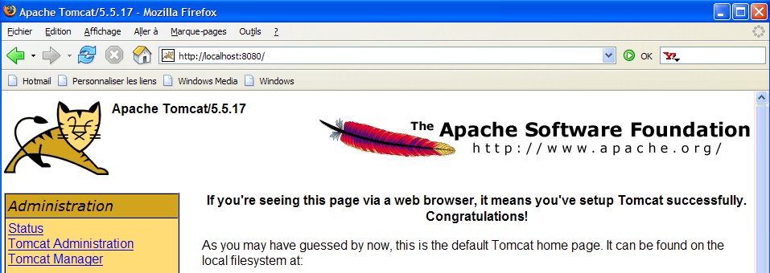
Via de onderstaande links kun je controleren of Tomcat correct is geïnstalleerd:

Alle links op de pagina [http://localhost:8080] zijn interessant en de lezer wordt uitgenodigd om ze te verkennen. We zullen later terugkomen op de links waarmee de op de server geïmplementeerde webapplicaties kunnen worden beheerd:

2.3. Implementatie van een webapplicatie op de Tomcat-server
Leesmateriaal [ref1]: hoofdstuk 1, hoofdstuk 2: 2.3.1, 2.3.2, 2.3.3
2.3.1. Implementatie
Een webapplicatie moet aan bepaalde regels voldoen om in een servletcontainer te kunnen worden geïmplementeerd. Stel dat <webapp> de map van een webapplicatie is. Een webapplicatie bestaat uit:
in de map <webapp>\WEB-INF\classes | |
in de map <webapp>\WEB-INF\lib | |
in de map <webapp> of submappen |
De webapplicatie wordt geconfigureerd via een bestand XML: <webapp>\WEB-INF\web.xml.
Laten we de webapplicatie bouwen met de volgende mappenstructuur:

We zullen de bovenstaande mappenstructuur opbouwen met de Windows Verkenner. De mappen [classes] en [lib] zijn hier leeg. De map [vues] bevat een statisch bestand HTML:
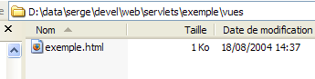
met de volgende inhoud:
<html>
<head>
<title>Application exemple</title>
</head>
<body>
Application exemple active ....
</body>
</html>
Als je dit bestand in een browser laadt, krijg je de volgende pagina te zien:

De door de browser weergegeven URL laat zien dat de pagina niet door een webserver is geleverd, maar rechtstreeks door de browser is geladen. We willen nu dat deze beschikbaar is via de Tomcat-webserver.
Laten we teruggaan naar de mappenstructuur van de map <tomcat>:
De configuratie van de webapplicaties die op de Tomcat-server zijn geïmplementeerd, gebeurt met behulp van XML-bestanden die in de map [<tomcat>\conf\Catalina\localhost] zijn geplaatst:
 |  |
Deze XML-bestanden kunnen handmatig worden aangemaakt, aangezien hun structuur eenvoudig is. In plaats van deze aanpak te volgen, gaan we gebruikmaken van de webtools die Tomcat ons biedt.
2.3.2. Beheer van Tomcat
Op de startpagina http://localhost:8080 biedt de server ons links om deze te beheren:

Via de link [Tomcat Administration] kunnen we de bronnen configureren die Tomcat ter beschikking stelt aan de webapplicaties die erin zijn geïmplementeerd, bijvoorbeeld een pool van verbindingen met een database. Laten we de link volgen:

De pagina die we te zien krijgen, geeft aan dat voor het beheer van Tomcat 5.x een specifiek pakket nodig is, genaamd "admin". Laten we teruggaan naar de Tomcat-website:

Laten we het zip-bestand met de naam [Administration Web Application] downloaden en vervolgens uitpakken. De inhoud is als volgt:
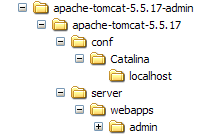
De map [admin] moet worden gekopieerd naar [<tomcat>\server\webapps], waarbij <tomcat> de map is waarin Tomcat is geïnstalleerd 5.x:

De map [localhost] bevat een bestand [admin.xml] dat moet worden gekopieerd naar [<tomcat>\conf\Catalina\localhost]:

Sluit Tomcat af en start het opnieuw op als het actief was. Vraag vervolgens met een browser de startpagina van de webserver opnieuw op:

Volg de link [Tomcat Administration]. We krijgen een inlogpagina te zien:
Opmerking: om de onderstaande pagina te krijgen, moest ik eerst handmatig de URL [http://localhost:8080/admin/index.jsp] opvragen. Pas daarna werkte de bovenstaande link [Tomcat Administration]. Ik weet niet of dit al dan niet een procedurefout van mijn kant was.
 |  |
Hier moeten we de gegevens invoeren die we tijdens de installatie van Tomcat hebben opgegeven. In ons geval voeren we de combinatie admin / admin in. De knop [Login] brengt ons naar de volgende pagina:
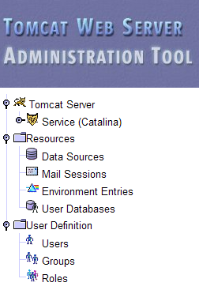
Op deze pagina kan de Tomcat-beheerder
- gegevensbronnen (Data Sources) in te stellen,
- de informatie die nodig is voor het verzenden van e-mail (Mail Sessions),
- omgevingsgegevens die voor alle applicaties toegankelijk zijn (Environment Entries),
- Tomcat-gebruikers/beheerders te beheren (Users),
- gebruikersgroepen te beheren (Groups),
- rollen definiëren (= wat een gebruiker wel of niet mag doen),
- het definiëren van de kenmerken van de door de server geïmplementeerde webapplicaties (Service Catalina)
Laten we de bovenstaande link [Roles] volgen:

Met een rol kunt u bepalen wat een gebruiker of een groep gebruikers wel of niet mag doen. Aan een rol worden bepaalde rechten toegekend. Elke gebruiker is gekoppeld aan een of meer rollen en beschikt over de rechten die bij deze rollen horen. De onderstaande rol [manager] geeft het recht om de in Tomcat geïmplementeerde webapplicaties te beheren (implementeren, starten, stoppen, verwijderen). We gaan een gebruiker [manager] aanmaken die we aan de rol [manager] zullen toewijzen, zodat deze de Tomcat-applicaties kan beheren. Hiervoor volgen we de link [Users] op de beheerpagina:

We zien dat er al een aantal gebruikers bestaat. We gebruiken de optie [Create New User] om een nieuwe gebruiker aan te maken:

We geven de gebruiker ‘manager’ het wachtwoord ‘manager’ en wijzen hem de rol ‘manager’ toe. We gebruiken de knop [Save] om deze toevoeging te bevestigen. De nieuwe gebruiker verschijnt in de lijst met gebruikers:

Deze nieuwe gebruiker wordt toegevoegd aan het bestand [<tomcat>\conf\tomcat-users.xml]:

met de volgende inhoud:
- regel 10: de gebruiker [manager] die is aangemaakt
Een andere manier om gebruikers toe te voegen is door dit bestand rechtstreeks te bewerken. Dit is met name de manier waarop u te werk moet gaan als u toevallig het wachtwoord van de beheerder ‘admin’ of ‘manager’ bent vergeten.
2.3.3. Beheer van geïmplementeerde webapplicaties
Laten we nu teruggaan naar de startpagina [http://localhost:8080] en de link [Tomcat Manager] volgen:

We komen dan op een authenticatiepagina terecht. We melden ons aan als manager / manager, c.a.d, de gebruiker met de rol [manager] die we zojuist hebben aangemaakt. Alleen een gebruiker met deze rol kan deze link namelijk gebruiken. Op regel 11 van [tomcat-users.xml] zien we dat de gebruiker [admin] ook de rol [manager] heeft. We zouden dus ook de authenticatie [admin / admin] kunnen gebruiken.

We krijgen een pagina te zien met een overzicht van de applicaties die momenteel in Tomcat zijn geïmplementeerd:

We kunnen een nieuwe applicatie toevoegen via de formulieren onderaan de pagina:

Hier willen we de voorbeeldapplicatie die we eerder hebben gebouwd, in Tomcat implementeren. Dat doen we als volgt:

/voorbeeld | de naam die wordt gebruikt om de te implementeren webapplicatie aan te duiden | |
C:\data\2005-2006\eclipse\dvp-eclipse-tomcat\voorbeeld | de map van de webapplicatie |
Om het bestand [C:\data\2005-2006\eclipse\dvp-eclipse-tomcat\exemple\vues\exemple.html] te verkrijgen, vragen we Tomcat om URL [http://localhost:8080/exemple/vues/exemple.html]. De context dient dus om de hoofdmap van de geïmplementeerde webapplicatie een naam te geven. We gebruiken de knop [Deploy] om de applicatie te implementeren. Als alles goed verloopt, krijgen we de volgende responspagina te zien:

en de nieuwe applicatie verschijnt in de lijst met geïmplementeerde applicaties:

Laten we de regel in de bovenstaande context /voorbeeld eens toelichten:
link naar http://localhost:8080/exemple | |
hiermee start je de applicatie | |
hiermee kun je de applicatie afsluiten | |
hiermee kun je de applicatie opnieuw laden. Dit is bijvoorbeeld nodig wanneer je bepaalde klassen aan de applicatie hebt toegevoegd, gewijzigd of verwijderd. | |
verwijdert de context [/exemple]. De applicatie verdwijnt uit de lijst met beschikbare applicaties. |
Nu onze voorbeeldapplicatie is geïmplementeerd, kunnen we enkele tests uitvoeren. We roepen de pagina [exemple.html] op via de URL [http://localhost:8080/exemple/vues/exemple.html]:

Een andere manier om een webapplicatie op de Tomcat-server te implementeren, is door de gegevens die we via de webinterface hebben opgegeven, op te nemen in een bestand [contexte].xml in de map [<tomcat>\conf\Catalina\localhost], waarbij [contexte] de naam van de webapplicatie is.
Laten we teruggaan naar de beheerinterface van Tomcat:

Laten we de applicatie [/exemple] samen met de bijbehorende link [Undeploy] verwijderen:

De applicatie [/exemple] staat niet meer in de lijst met actieve applicaties. Laten we nu het volgende bestand [exemple.xml] definiëren:
Het bestand XML bestaat uit één enkele <Context>-tag waarvan het attribuut docBase de map definieert die de te implementeren webapplicatie bevat. Laten we dit bestand in <tomcat>\conf\Catalina\localhost plaatsen:

Stop Tomcat indien nodig en start het opnieuw op, en bekijk vervolgens de lijst met actieve applicaties via de Tomcat-beheerder:

De applicatie [/exemple] is inderdaad aanwezig. Laten we met een browser de URL opvragen:
[http://localhost:8080/exemple/vues/exemple.html]:
Een op deze manier geïmplementeerde webapplicatie kan op dezelfde manier als eerder uit de lijst met geïmplementeerde applicaties worden verwijderd via de link [Undeploy]:

In dit geval wordt het bestand [exemple.xml] automatisch verwijderd uit de map [<tomcat>\conf\Catalina\localhost].
Ten slotte kan men, om een webapplicatie binnen Tomcat te implementeren, de context ervan ook definiëren in het bestand [<tomcat>\conf\server.xml]. We zullen hier niet verder op ingaan.
2.3.4. Webapplicatie met startpagina
Wanneer we de URL [http://localhost:8080/exemple/] opvragen, krijgen we het volgende antwoord:

Dit resultaat hangt af van de configuratie van Tomcat. Bij eerdere versies zouden we de inhoud van de fysieke map van de applicatie [/exemple] hebben gekregen. Het is een goede zaak dat Tomcat deze weergave nu standaard voorkomt.
We kunnen ervoor zorgen dat er, wanneer de context wordt opgevraagd, een zogenaamde startpagina wordt weergegeven. Hiervoor maken we een bestand [web.xml] aan dat we in de map <voorbeeld>\WEB-INF plaatsen, waarbij <voorbeeld> de fysieke map is van de webapplicatie [/exemple]. Dit bestand ziet er als volgt uit:
- regels 2-5: de root-tag <web-app> met attributen die zijn gekopieerd en geplakt uit het bestand [web.xml] van de Tomcat-applicatie [/admin] (<tomcat>/server/webapps/admin/WEB-INF/web.xml).
- regel 7: de weergavenaam van de webapplicatie. Dit is een vrije naam waarvoor minder beperkingen gelden dan voor de contextnaam van de applicatie. Je kunt er bijvoorbeeld spaties in gebruiken, wat bij de contextnaam niet mogelijk is. Deze naam wordt bijvoorbeeld weergegeven door de Tomcat-beheerder:

- regel 8: beschrijving van de webapplicatie. Deze tekst kan vervolgens programmatisch worden opgehaald.
- regels 9-11: de lijst met welkomstbestanden. De tag <welcome-file-list> wordt gebruikt om de lijst met weergaven te definiëren die moeten worden getoond wanneer een client de applicatiecontext opvraagt. Er kunnen meerdere weergaven zijn. De eerste die wordt gevonden, wordt aan de client getoond. Hier hebben we er maar één: [/vues/exemple.html]. Wanneer een client dus de URL [/exemple] opvraagt, wordt in feite de URL [/exemple/vues/exemple.html] geleverd.
Laten we dit bestand [web.xml] opslaan in <voorbeeld>\WEB-INF:

Als Tomcat nog steeds actief is, kun je het dwingen de webapplicatie [/exemple] opnieuw te laden via de link [Recharger]:

Tijdens deze "herlaad"-bewerking leest Tomcat het bestand [web.xml] dat in [<exemple>\WEB-INF] is opgenomen opnieuw in, indien het bestaat. Dat is hier het geval. Als Tomcat was gestopt, start u het opnieuw op.
Laten we met een browser het bestand URL en [http://localhost:8080/exemple/] opvragen:

Het mechanisme van de hostbestanden heeft gewerkt.
2.4. Installatie van Eclipse
Eclipse is een ontwikkelomgeving voor meerdere programmeertalen. Het wordt veel gebruikt bij de ontwikkeling van Java. Het is een uitbreidbaar hulpmiddel door het toevoegen van tools die ‘plugins’ worden genoemd. Er bestaan een groot aantal plugins en dat is de kracht van Eclipse.
Eclipse is beschikbaar via de URL [http://www.eclipse.org/downloads/]:

We willen Eclipse gebruiken voor webontwikkeling in Java. Hiervoor bestaan een aantal plug-ins. Deze helpen bij het controleren van de syntaxis van JSP-pagina's, XML-bestanden, ... en maken het mogelijk om een webapplicatie binnen Eclipse te testen. We gaan een van deze plug-ins gebruiken, namelijk het Web Tools Package (WTP). De gebruikelijke installatieprocedure voor Eclipse is als volgt:
- Eclipse installeren
- de benodigde plug-ins installeren
De plug-in WTP vereist zelf weer andere plug-ins, waardoor de installatie ervan vrij complex is. Daarom biedt de Eclipse-website een pakket aan dat het Eclipse-ontwikkelplatform en de plug-in WTP bevat, samen met alle andere plug-ins die deze nodig heeft. Dit pakket is beschikbaar op de Eclipse-website (mei 2006) via de URL [http://download.eclipse.org/webtools/downloads/]:
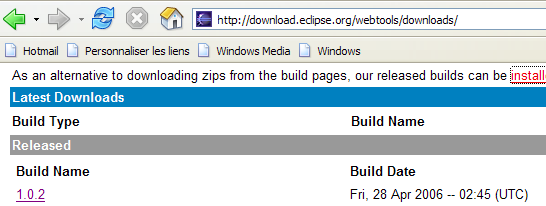
Laten we de bovenstaande link [1.0.2] volgen:
We downloaden het pakket [wtp] via de bovenstaande link. Het verkregen zip-bestand bevat het volgende:
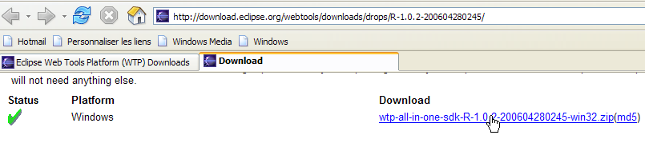

Pak deze inhoud gewoon uit in een map. We noemen deze map voortaan <eclipse>. De inhoud ervan is als volgt:

[eclipse.exe] is het uitvoerbare bestand en [eclipse.ini] het configuratiebestand ervan. Laten we de inhoud ervan eens bekijken:
Deze argumenten worden bij het opstarten van Eclipse als volgt gebruikt:
We komen tot hetzelfde resultaat als met het .ini-bestand door een snelkoppeling te maken die Eclipse met dezelfde argumenten start. Laten we deze eens toelichten:
- -vmargs: geeft aan dat de volgende argumenten bestemd zijn voor de Java-virtuele machine die Eclipse gaat uitvoeren. Eclipse is namelijk een Java-toepassing.
- -Xms40m: ?
- -Xmx256m: stelt de geheugengrootte in MB in die wordt toegewezen aan de Java-virtuele machine (JVM) die Eclipse uitvoert. Standaard is deze grootte 256 MB, zoals hier weergegeven. Indien de machine dit toelaat, verdient 512 MB de voorkeur.
Deze argumenten worden doorgegeven aan de JVM die Eclipse gaat uitvoeren. De JVM wordt vertegenwoordigd door een bestand [java.exe] of [javaw.exe]. Hoe wordt dit bestand gevonden? Er wordt op verschillende manieren naar gezocht:
- in het bestand PATH van het bestand OS
- in de map <JAVA_HOME>/jre/bin, waarbij JAVA_HOME een systeemvariabele is die de hoofdmap van een JDK definieert.
- naar een locatie die als argument aan Eclipse wordt doorgegeven in de vorm -vm <pad>\javaw.exe
Deze laatste oplossing verdient de voorkeur, omdat de andere twee onderhevig zijn aan onvoorziene omstandigheden bij latere installaties van applicaties, die ofwel de PATH van de OS kunnen wijzigen, ofwel de variabele JAVA_HOME kunnen wijzigen.
We maken daarom de volgende snelkoppeling aan:

<eclipse>\eclipse.exe -vm "C:\Program Files\Java\jre1.5.0_06\bin\javaw.exe" -vmargs -Xms40m -Xmx512m | |
Eclipse-installatiemap <eclipse> |
Als dit is gebeurd, starten we Eclipse via deze snelkoppeling. Er verschijnt een eerste dialoogvenster:

Een [workspace] is een werkruimte. Laten we de voorgestelde standaardwaarden accepteren. Standaard worden Eclipse-projecten aangemaakt in de map <workspace> die in dit dialoogvenster is opgegeven. Er is een manier om dit gedrag te omzeilen. Dat zullen we systematisch doen. Het antwoord dat in dit dialoogvenster wordt gegeven, is dus niet van belang.
Na deze stap wordt de Eclipse-ontwikkelomgeving weergegeven:

We sluiten het venster [Welcome] zoals hierboven voorgesteld:

Voordat we een Java-project aanmaken, gaan we Eclipse configureren om aan te geven dat JDK moet worden gebruikt voor het compileren van Java-projecten. Hiervoor kiezen we de optie [Window / Preferences / Java / Installed JREs ]:

Normaal gesproken moet de JRE (Java Runtime Environment) die is gebruikt om Eclipse zelf te starten, in de lijst met JRE staan. Dit is normaal gesproken de enige. Het is mogelijk om JRE toe te voegen met de knop [Add]. U moet dan de hoofdmap van de JRE aangeven. De knop [Search] start op zijn beurt een zoekopdracht naar JREs op de schijf. Dit is een goede manier om te achterhalen hoe het staat met de JREs-bestanden die je installeert en vervolgens vergeet te verwijderen wanneer je overstapt op een nieuwere versie. Hierboven is het aangevinkte bestand JRE het bestand dat zal worden gebruikt om de Java-projecten te compileren en uit te voeren.
Het JRE dat in onze voorbeelden wordt gebruikt, is het bestand dat in paragraaf 2.1 is geïnstalleerd en dat ook is gebruikt om Eclipse te starten. Door erop te dubbelklikken krijg je toegang tot de eigenschappen ervan:
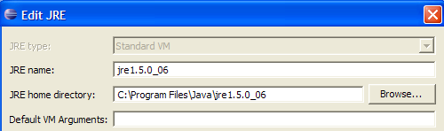
Laten we nu een Java-project [File / New / Project] aanmaken:
 |  |
Kies [Java Project], vervolgens [Next] ->

In [2] geven we een lege map op waarin het Java-project zal worden geïnstalleerd. In [1] geven we het project een naam. De naam hoeft niet dezelfde te zijn als die van de map, zoals het bovenstaande voorbeeld zou kunnen doen vermoeden. Zodra dit is gebeurd, klikken we op de knop [Finish] om de aanmaakwizard af te sluiten. Dit komt neer op het accepteren van de standaardwaarden die op de volgende pagina’s van de wizard worden voorgesteld.
We hebben nu een Java-projectskelet:

Klik met de rechtermuisknop op het project [test1] om een Java-klasse aan te maken:

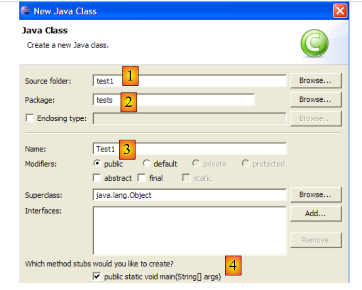
- in [1], de map waarin de klasse wordt aangemaakt. Eclipse stelt standaard de map van het huidige project voor.
- in [2], het pakket waarin de klasse wordt geplaatst
- in [3], de naam van de klasse
- in [4] vragen we om de statische methode [main] te genereren
We bevestigen de wizard met [Finish]. Het project wordt vervolgens uitgebreid met een klasse:

Eclipse heeft het skelet van de klasse gegenereerd. Dit wordt weergegeven door te dubbelklikken op [Test1.java] hierboven:

We passen de bovenstaande code als volgt aan:

We voeren het programma [Test1.java] uit: [clic droit sur Test1.java -> Run As -> Java Application]

Het resultaat van de uitvoering wordt weergegeven in het venster [Console]:

2.5. Tomcat-integratie - Eclipse
Om met Tomcat te kunnen werken terwijl we in Eclipse blijven, moeten we deze server in de Eclipse-configuratie opgeven. Hiervoor kiezen we de optie [File / New / Other]. We krijgen dan de volgende wizard te zien:

We kiezen ervoor om een nieuwe server aan te maken. We selecteren het pictogram [Server] hierboven en voeren vervolgens [Next] uit:
Het toevoegen van de server resulteert in het verschijnen van een map in de projectverkenner van Eclipse:
Om Tomcat vanuit Eclipse te beheren, openen we de weergave met de naam [Servers] met de optie [Window -> Show View -> Other -> Server]:

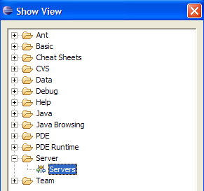
Maak [OK] aan. De weergave [Servers] verschijnt dan:

In dit scherm worden alle geregistreerde servers weergegeven, in dit geval de Tomcat 5.5-server die we zojuist hebben geregistreerd. Met een rechtermuisklik hierop krijgt u toegang tot de opdrachten om de server te starten, te stoppen of opnieuw op te starten:

Hierboven starten we de server. Tijdens het opstarten worden er een aantal logbestanden geschreven in het venster [Console]:
Het duurt even voordat je deze logbestanden begrijpt. We zullen er voorlopig niet verder op ingaan. Het is echter belangrijk om te controleren of er geen fouten bij het laden van contexten worden gemeld. Wanneer de Tomcat-/Eclipse-server wordt gestart, probeert deze namelijk de context van de applicaties die hij beheert te laden. Het laden van de context van een applicatie houdt in dat het bijbehorende bestand [web.xml] wordt verwerkt en dat een of meer klassen worden geladen die deze context initialiseren. Er kunnen dan verschillende soorten fouten optreden:
- het bestand [web.xml] bevat syntactische fouten. Dit is de meest voorkomende fout. Het wordt aangeraden om een tool te gebruiken die de geldigheid van een XML-document kan controleren tijdens het samenstellen ervan.
- bepaalde te laden klassen zijn niet gevonden. Er wordt naar deze klassen gezocht in [WEB-INF/classes] en [WEB-INF/lib]. Over het algemeen moet worden gecontroleerd of de benodigde klassen aanwezig zijn en of de spelling van de klassen die in het bestand [web.xml] zijn gedeclareerd, correct is.
De server die vanuit Eclipse is gestart, heeft niet dezelfde configuratie als de server die in paragraaf 2.2, pagina 5, is geïnstalleerd. Om dit te controleren, roepen we de URL [http://localhost:8080] op met een browser:

Dit antwoord betekent niet dat de server niet werkt, maar dat de opgevraagde bron / niet beschikbaar is. Met de in Eclipse geïntegreerde Tomcat-server zullen deze bronnen webprojecten zijn. Dat zullen we later zien. Laten we Tomcat voorlopig even stoppen:

De vorige werkwijze kan worden gewijzigd. Laten we teruggaan naar de weergave [Servers] en dubbelklikken op de Tomcat-server om de eigenschappen ervan te openen:
 |  |
Het selectievakje [1] is verantwoordelijk voor de vorige werkwijze. Wanneer dit vakje is aangevinkt, worden de in Eclipse ontwikkelde webapplicaties niet in de configuratiebestanden van de bijbehorende Tomcat-server gedeclareerd, maar in aparte configuratiebestanden. Hierdoor zijn de standaard gedefinieerde applicaties binnen de Tomcat-server niet beschikbaar: [admin] en [manager], twee nuttige applicaties. Daarom gaan we het selectievakje [1] uitschakelen en Tomcat opnieuw opstarten:
 |  |
Als dit is gebeurd, roepen we de URL [http://localhost:8080] op met een browser:

We zien dat het systeem werkt zoals beschreven in paragraaf 2.3.3, pagina 15.
In onze voorgaande voorbeelden hebben we een browser buiten Eclipse gebruikt. Je kunt ook een browser binnen Eclipse gebruiken:

Hierboven selecteren we de interne browser. Om deze vanuit Eclipse te starten, kun je het volgende pictogram gebruiken:

De browser die daadwerkelijk wordt gestart, is degene die is geselecteerd via de optie [Window -> Web Browser]. In dit geval krijgen we de interne browser te zien:

Laten we indien nodig Tomcat vanuit Eclipse starten en in [1] de URL [http://localhost:8080] opvragen:

Laten we de link [Tomcat Manager] volgen:

Er wordt gevraagd om de combinatie [login / mot de passe] die nodig is om toegang te krijgen tot de applicatie [manager]. Op basis van de Tomcat-configuratie die we eerder hebben uitgevoerd, kunnen we [admin / admin] of [manager / manager] invoeren. Vervolgens krijgen we de lijst met geïmplementeerde applicaties te zien:
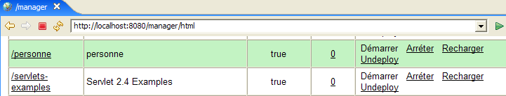
We zien de applicatie [personne] die we hebben aangemaakt. De bijbehorende link [Recharger] zullen we later nog nodig hebben.